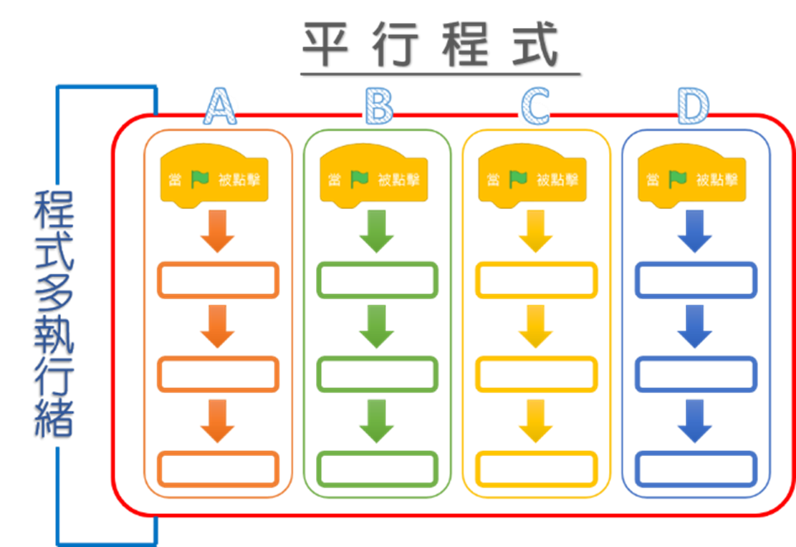

|
|
|---|
 平行程式執行
平行程式執行
「平行程式執行」，也稱為「並發」，是計算機科學中的一種概念，意指有多種計算同時執行（稱為執行緒或線程）。這個核心技術就是多執行緒程式，也是並發性。每個存在的腳本都會在自己的線程中運行。
Scratch是允許多個腳本程式同時運行的。然而，目前的Scratch實際上並不是同時執行積木腳本的，而只是在不同的所謂的執行緒之間快速來回跳轉，使得執行時看起來像是並行發生的。對大多數的使用者來說，感覺就是如此。
在Scratch中，《帽子積木》（除了自定義函式積木外）都會建立自己的線程來處理後續積木腳本。
在Scratch中的用途：
①執行複雜的數學函數。
②編譯圖形。
③使一個角色能有多個腳本。
④使用在分身上。
其優點是：
①可以允許你正在執行專案時，通過密集性多處理程序且繼續運行。
②可以允許你同時更新多項事件內容。
其缺點是：
①如果兩個執行緒同時存取一個資源，結果是不可預測的。
②當要調試偵錯時會變得困難，因為不知道是從哪執行的。
